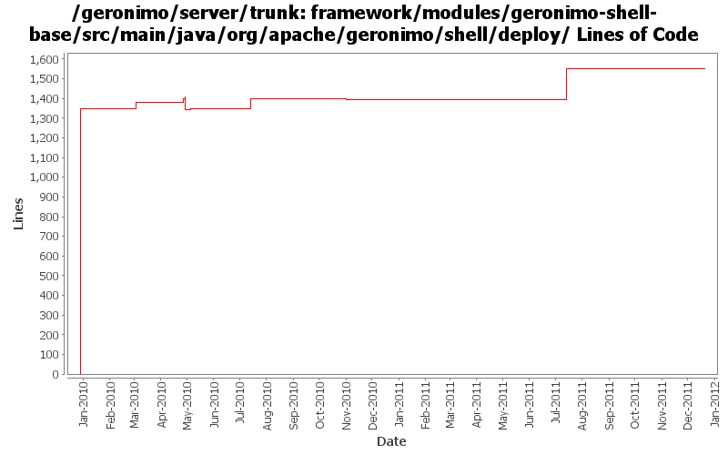

[root]/framework/modules/geronimo-shell-base/src/main/java/org/apache/geronimo/shell/deploy

| Author | Changes | Lines of Code | Lines per Change |
|---|---|---|---|
| Totals | 71 (100.0%) | 1736 (100.0%) | 24.4 |
| genspring | 18 (25.4%) | 1381 (79.6%) | 76.7 |
| chirunhua | 2 (2.8%) | 155 (8.9%) | 77.5 |
| gawor | 21 (29.6%) | 134 (7.7%) | 6.3 |
| djencks | 21 (29.6%) | 46 (2.6%) | 2.1 |
| xuhaihong | 6 (8.5%) | 17 (1.0%) | 2.8 |
| rwonly | 2 (2.8%) | 2 (0.1%) | 1.0 |
| violalu | 1 (1.4%) | 1 (0.1%) | 1.0 |
GERONIMO-6240 Update to changed jline and moved shell annotations
46 lines of code changed in 21 files:
GERONIMO-5764 some improvements of bundle recorder:
(1) use the logic in pluginInstallerGBean when install bundle, so that the Artifact could be calculated the same way, and also can convert a normal jar if the file is not an OSGi bundle.
(2) when delete an item in startup.properties, also delete the odd empty lines.
2 lines of code changed in 2 files:
support bundle installation and uninstallation from Karaf Shell
155 lines of code changed in 2 files:
GERONIMO-5601 Problem with "deploy:list-plugins" gogo command
1 lines of code changed in 1 file:
GERONIMO-5885 Upgrade karaf from 2.1.2 to 2.2.1-SNAPSHOT
1 lines of code changed in 1 file:
GERONIMO-5579 a. Wrap the default rmi urlContextFactory b. Enable multiple RemoteDeploymentManager in the same vm of the server runtime
1 lines of code changed in 1 file:
GERONIMO-5614 problem with "deploy:assemble-server" gogo command
4 lines of code changed in 1 file:
GERONIMO-5611 Problem with "deploy:install-plugin" command.
Currently, we do not support space in the file path.
1 lines of code changed in 1 file:
GERONIMO-5613 Check whether current connection is of OfflineServerConnection to determine whether the embedded mode is used.
5 lines of code changed in 1 file:
GERONIMO-5579 Check hostname to determine whether the expected server is the embedded one
Just the first step changes, some naming updates are required
5 lines of code changed in 1 file:
GERONIMO-5421: GoGo command for unlock-keystore plus other related fixes and improvements. Initial patch from Chi Runhua
51 lines of code changed in 1 file:
GERONIMO-5213: Fixed the disconnect command and updated the login command to work better in embedded mode
6 lines of code changed in 2 files:
GERONIMO-5213: More improvments for Geronimo Karaf shell commands. Refactored RemoteDeploymentManager so that the same set of operations can be invoked remote or locally.
37 lines of code changed in 15 files:
fix reading input and writting output in karaf shell
1 lines of code changed in 1 file:
GERONIMO-5213: Fix a bunch of Geronimo Karaf shell commands. Add support for 'embedded' mode where the commands know they are executing in a server shell and do not require a jmx connection
20 lines of code changed in 1 file:
license headers
19 lines of code changed in 1 file:
GERONIMO-3003 create karaf command wraaper for encryptCommand, patch from Vanessa Wang.
35 lines of code changed in 1 file:
GERONIMO-4948 To migrate existing geronimo gshell commands to karaf based shell. --- committing migrated commands into shell-base. Thanks Vanessa for her help.
1346 lines of code changed in 17 files: